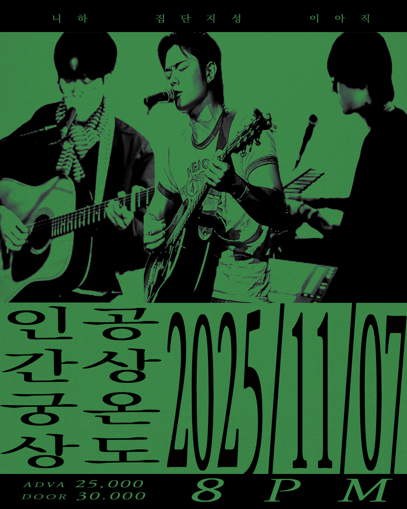
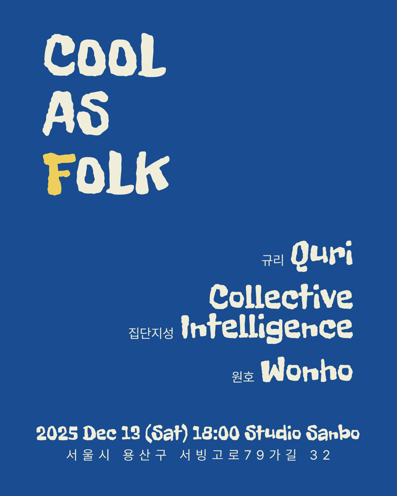

2025 | Album & Novel
홀로 남은 (Left Alone)
Role: 작사/작곡/연주/믹싱(전과정) & 소설 집필
정규 2집 앨범과 동명의 소설을 동시에 출판한 통합 프로젝트입니다. 피지컬 CD 대신 소설을 출판하여 청각적 경험을 텍스트 서사로 확장했습니다.

김지성 (KimIntelligence)은 음악과 텍스트라는 두 개의 언어로 세계를 이해하고 기록하는 창작자입니다. 그의 창작 활동은 **'인간 본질과 사회적 모순에 대한 탐구'**라는 일관된 질문에서 시작됩니다.
음악 프로젝트 **'집단지성'**을 통해 냉소와 희망을 노래하며, 가상악기 없이 모든 제작 과정을 직접 소화하여 **불완전하지만 진실된 사운드**를 추구합니다.
음악과 글을 융합하여 서사를 확장하는 핵심 창작물
Role: 작사/작곡/연주/믹싱(전과정) & 소설 집필
정규 2집 앨범과 동명의 소설을 동시에 출판한 통합 프로젝트입니다. 피지컬 CD 대신 소설을 출판하여 청각적 경험을 텍스트 서사로 확장했습니다.
Role: 1인 밴드 전 과정 프로듀싱 (성불락 -> 집단지성으로 활동명 변경)
집단지성의 첫 번째 정규 앨범. 세계에 대한 불신 속에서 개인의 내면으로 침잠하여 스스로의 구원을 모색하는 철학적 여정을 담았습니다.
Publisher '인텔리 (Intelli)' 설립 및 전문 편집 역량

Role: 기획, 섭외, 집필, 편집, 출판
서울문화재단 지원사업 선정작. 차승우, 이찬희 등 인디씬 구성원 13인의 에세이를 엮은 인터뷰집입니다. 인디 음악의 가치를 기록하고 팬들에게 선물 같은 책이 되도록 기획했습니다.

Role: 전문 편집 (Editor)
밴드의 날것 그대로의 작업일지를 독자의 언어로 구조화한 아카이빙 북입니다. 클라이언트의 니즈를 파악하고 텍스트의 톤 앤 매너를 조율하는 전문 에디터로서의 역량을 발휘했습니다.
공간과 컨셉을 설계하는 기획 및 공연 실행력

Role: 기획 및 출연 @공상온도
"궁상"을 진솔함으로 재해석하여, 세 명의 뮤지션이 각자의 인간군상을 보여주는 스토리텔링형 공연을 기획했습니다.

Role: 기획 및 출연 @스튜디오 산보
"오래된 것은 낡은 것이 아니라, 쿨한 것이다." 시대 속에서 포크 음악이 가진 깊이와 '오래됨의 미학'을 힙(Hip)한 감성으로 재정의한 공연 프로젝트입니다.